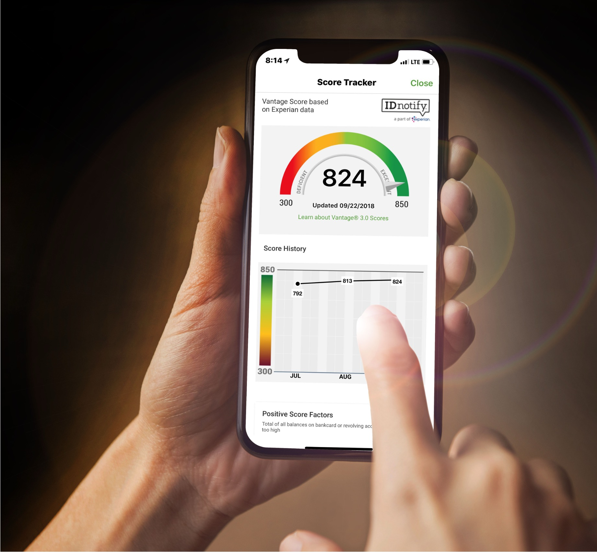
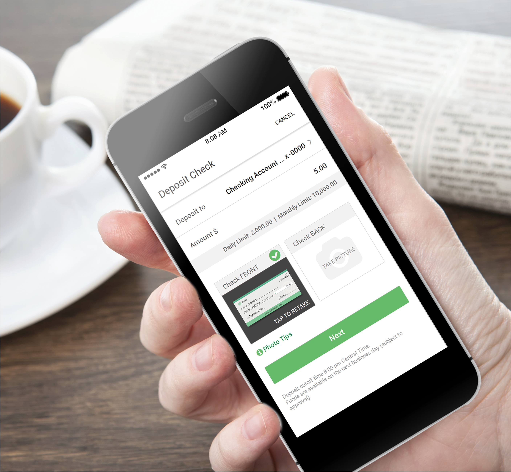
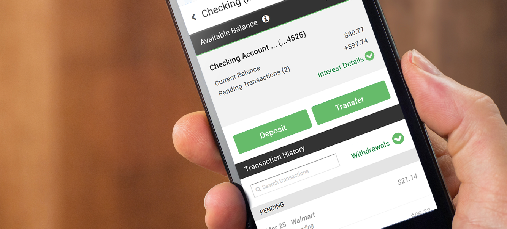
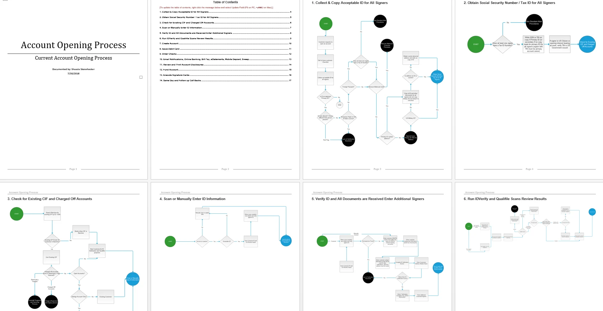

Case Study
Mobile Banking App
Led three initiatives to modernize mobile banking: a native iOS and Android app redesign, a multi-channel adoption campaign across in-branch and digital touchpoints, and a cross-channel journey analysis to ensure seamless transitions and feature parity between branch and remote banking.
Overview
I led three connected initiatives to modernize mobile banking and improve how customers move between digital and in-branch service: (1) a native iOS + Android app redesign, (2) a multi-channel adoption campaign, and (3) a cross-channel journey analysis to ensure seamless transitions and feature parity.
Initiative 1: Mobile App Redesign (iOS & Android)
Situation
Customers increasingly manage finances in short, high-distraction mobile sessions. The existing experience made core tasks feel harder than they needed to be—especially transfers, bill pay, and authentication—due to inconsistent patterns and unclear hierarchy.
Task
As the lead designer, I owned the redesign of the native iOS and Android mobile banking experience and created implementation-ready documentation that could scale across teams.
Action
I redesigned the experience around task-based navigation, predictable security patterns, and transaction transparency—balancing usability with compliance and trust expectations.
- End-to-end workflow redesign: account overview, navigation, bill pay, transfers, and account management
- Authentication & recovery: login, second-factor verification, forgot password, and error recovery states
- Money movement: Western Union transfers, peer-to-peer transfers, internal/external transfers
- Customer control: settings, personal information management, and supporting account controls
- Confidence at commit points: review states, confirmations, and clear content rules to reduce perceived risk
- Spec-ready delivery: detailed journey flows, screen-level specifications, and prototypes for build clarity
Result
Delivered a clearer, more scalable mobile foundation with streamlined workflows, consistent patterns, and detailed specifications that reduced ambiguity for implementation and supported future iteration.
Artifacts
Deliverables included high-fidelity UI, interactive prototypes, and detailed workflow specifications to align partners and accelerate delivery.

Design specs: mobile workflows
I produced end-to-end flows and screen-level specifications to improve consistency, reduce implementation ambiguity, and support iteration based on real customer behavior.


Initiative 2: Mobile App Marketing & Adoption
Situation
After launching new features, the bank needed to drive awareness and adoption across a large footprint where customers encountered the brand both in-person and digitally.
Task
Design and scale a multi-channel marketing system that promoted the mobile app and made new capabilities easy to understand—wherever customers interacted with the bank.
Action
I created a consistent set of promotional assets across in-branch and digital touchpoints, ensuring the marketing story matched the product experience.
- In-branch rollout: digital signage and print across 750+ branches in 17 states
- ATM surfaces: screen creative aligned with mobile messaging and feature education
- Email & web: campaigns and site assets to highlight new mobile capabilities and drive uptake
- Brochures: clear feature storytelling designed for quick scan and customer reassurance
Result
Customers encountered a unified message across physical and digital channels, reinforcing awareness of new features and supporting adoption of mobile banking behaviors.
Initiative 3: Cross-Channel Banking Journey Analysis
Situation
Banking is rarely a single-channel experience. Customers move between branch visits, mobile self-service, and assisted support—yet gaps in parity and handoffs can create confusion and duplicated effort.
Task
Understand and map how customers engage with banking in person and remotely, then identify opportunities to improve transitions and ensure feature parity across channels.
Action
I mapped cross-channel journeys, aligned stakeholders on where friction occurred, and used artifacts to prioritize improvements that made experiences feel connected—rather than separate products.
- Journey mapping: documented how customers transition between branch, mobile, and support
- Parity analysis: identified mismatches where mobile did not support common in-branch outcomes
- Prioritization inputs: clarified high-value moments for mobile to reduce friction and increase continuity
Result
Provided a clear view of where digital experiences needed better continuity with branch banking, helping teams prioritize parity and reduce friction in channel transitions.
UX strategy: where mobile fits in the ecosystem
I mapped how customers move between self-service, branch touchpoints, and assisted support to identify high-value moments where mobile can reduce friction and improve continuity.

Personas: designing for real banking behaviors
Personas grounded the work in real constraints—technology comfort levels, banking habits, and pain points—so workflows served both confident mobile users and customers who need extra reassurance.


Process flow: account opening complexity
I used process flows to make compliance-driven complexity explicit, align decision points with stakeholders, and identify opportunities to reduce drop-off through clearer guidance.

Outcome
Across product redesign, adoption marketing, and cross-channel journey analysis, this work established a scalable mobile foundation, strengthened trust-first patterns, and improved continuity between in-branch and remote banking experiences.